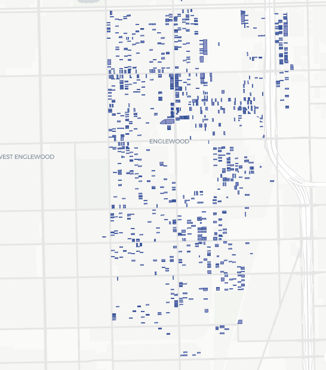

Agile Health-in-All-Policies SDOH Playbook for Chicago
A structured yet flexible framework for advancing health equity citywide — combining an equity-driven vision, agile sprint methodology, and cross-sector partnership across all Social Determinants of Health.
Executive Summary
- Equity-Driven Vision: Align with Healthy Chicago 2025's goals to close racial health gaps, incorporating a Health-In-All-Policies approach to address Social Determinants of Health.
- Agile Test-and-Learn: Use 30–60–90 day "sprints" for pilot interventions across SDOH domains. Define clear "Definition of Done" metrics for each pilot (e.g. number of homes built, clinic visits improved). If targets aren't met, reallocate resources quickly — embracing the agile principle of "fail fast" and continuous learning.
- Cross-Sector Partnership: Leverage the "Trinity" of government, nonprofits, and private sector. Convene a steering committee with Chicago and Cook County agencies (CDPH, DPD, CPS, CTA, etc.), community-based organizations, philanthropic leaders, and businesses. Build on existing referral networks (e.g. Unite Us) that connect health clinics to food banks and housing services, ensuring closed-loop care coordination.
- Data-Driven Integration: Use existing data platforms to approximate a "single view" of resident needs without overhauling IT. Chicago's Health Atlas and the Chicago Open Data portal provide neighborhood SDOH indicators, while referral systems collect individual social needs. Linking these — as Denver does with real-time homeless analytics — can highlight hotspots for targeted action.
- Immediate Wins & MVP Actions: Identify evidence-based quick-win interventions to adapt locally, piloting in CDPH's hyperfocus neighborhoods: Garfield Park, Lawndale, and Englewood. Rockford, IL eliminated veteran homelessness via the Built-for-Zero "by-name" tracking strategy. Chicago's own VeggieRx produce-prescription program has already enrolled thousands and showed significant reductions in participants' BMI and food insecurity. These models can be piloted with a Minimally Viable Product approach, enabling rapid prototyping and lower risk.
- Stakeholder Value: Design win-win incentives: Tax Increment Financing (TIF) or density bonuses for developers who build affordable housing with green space, Community Reinvestment Act (CRA) credits for banks financing community projects, corporate social impact goals for private partners. A stakeholder value map will align each SDOH bucket with private-sector incentives and public goals.
Pilot SDOH Interventions
The following intervention areas are organized around the five SDOH domains. Each should have clear metrics (e.g. jobs placed, crime rate changes, graduation rates) and responsible leads (city departments, nonprofits, or private partners). The project listing will be continually refined by the Agile steering committee, adding new ideas and retiring ineffective ones.
Workforce & Income
- Expand tailored job-training and placement programs (e.g. sectoral partnerships, transitional jobs) in high-unemployment areas. Provide wraparound supports (transportation vouchers, childcare) so participants can succeed.
- Promote living-wage policies and employer incentives (tax credits) to raise incomes.
Affordable Housing
- Scale Housing-First models and rapid rehousing to achieve "functional zero" homelessness. Chicago can replicate Rockford's HUD-VASH approach for veterans.
- Use pilot bond-financing (like Denver's privately-funded renovation fund) for low-income housing. Require TIF-subsidized developments to include affordable units and local hiring.
- Build homes in hyperfocused neighborhoods, scaling the Missing Middle Housing Initiative. Pilot an expansion of Chicago Women in Trades and related programs.
Food Security
- Support Food-as-Medicine initiatives: clinic-based produce prescription programs (modeled on VeggieRx), mobile farmers markets, and vouchers at grocery stores.
- Coordinate with federal nutrition programs (SNAP, WIC) to "medically" prescribe fresh food.
Financial Inclusion
- Partner with community development financial institutions (CDFIs) to expand small-business loans and emergency cash assistance.
- Encourage banks to direct CRA investments into community wealth-building (affordable home loans, low-interest microloans).
Early Learning
- Expand universal full-day pre-K and high-quality childcare, especially in low-income neighborhoods, to set children on strong educational paths. Supportive child-care policies help parents work and reduce poverty.
K–12 & Youth
- Increase after-school tutoring, mentoring and summer programs to improve graduation rates. Invest in STEM and arts programs in under-resourced schools.
- Link schools with healthcare (school nurses) to address health barriers to learning.
Adult & Career Education
- Offer GED/ESL classes and vocational training in community centers and libraries. Partner with Chicago's major employers to create apprenticeship pipelines (healthcare, technology, green jobs).
- Provide career counseling and job placement to help adults gain steady employment.
Parental Supports
- Provide adult education and parenting classes in tandem with child services, recognizing that higher education for parents correlates with healthier children.

Insurance Coverage
- Organize enrollment drives to maximize Medicaid/ACA uptake, especially in communities with low coverage. Offer on-site navigators at clinics.
Integrated Care & Navigation
- Embed community health workers in primary clinics to screen for SDOH (using tools like PRAPARE) and connect patients to services via Unite Us referrals. Use closed-loop referrals so healthcare providers can see outcomes.
Telehealth & Clinics
- Expand telehealth infrastructure and mobile clinics in transit-poor areas (rural Cook County, South/Southwest Chicago). Provide transportation vouchers or ride-share credits for medical appointments — studies show transit subsidies increase care utilization.
Health Literacy
- Fund community workshops and hotlines (in multiple languages) to improve navigation of care and healthy behaviors. Leverage libraries and schools as health-education hubs.
Affordable Homes & Stability
- Preserve existing affordable housing (e.g. rehab aging units) and enforce tenant protections. Convert vacant lots (n ≈ 7,000) into housing or green spaces. Prioritize 2- and 3-flat dwellings, and pilot tiny house communities.
Environmental Health
- Remediate lead and pollution hotspots, enforce clean-up of Brownfields. Install air-quality monitors and tree-planting for "cool streets" in heat-vulnerable areas.
Safe & Active Design
- Invest in pedestrian/bike infrastructure in target neighborhoods to encourage physical activity. Implement Vision Zero traffic calming to reduce injuries. Expand lighting and security cameras in high-crime zones to improve safety.
Food & Transit Access
- Address food deserts by incentivizing grocery and farmers market startups in underserved areas. Enhance microtransit services to connect residents to jobs, schools, clinics and stores.
Cross-Sector Stakeholder Map and Governance
Chicago's Governance Structure for this Playbook would resemble an Agile "tripartite" model (Government – Non-profit – Private) working in unison. A proposed Steering Council — including CDPH, CCDPH, city agencies like DPD/DFSS, Cook County, major CBO coalitions, philanthropy, hospital and business reps — would set priorities and approve quarterly sprint projects.
30–60–90 Day Sprints
Each policy or program pilot is scoped to a short cycle. At sprint-start, the Council agrees on objectives and metrics (the Definition of Done). Teams from relevant agencies/partners implement the pilot in one or more neighborhoods. Progress is reviewed monthly, and at 30/60/90 days the Council decides to continue, scale, adapt or halt. This "test-and-learn" approach is recommended for public policy to prioritize quick evidence-based wins.
Agile Culture
The Council enforces transparency and cross-department accountability. By breaking silos — as agile emphasizes — agency staff are empowered to collaborate across functions. For example, a housing-and-health pilot might pair CDPH with DPD, CPS, and a private developer under a single workstream. Each team has shared goals and daily stand-ups (or weekly check-ins) to accelerate execution.
Fail-Fast Evaluations
Per agile principles, pilots that miss benchmarks trigger immediate review. Resources are quickly reallocated to more promising efforts. This prevents sunk-cost fallacy and builds momentum on successes. Tools like rapid cycle evaluation and real-time dashboards (drawing on the Equity Dashboard concept) will be used at sprint reviews.
Example: If a bus-pass program doesn't boost clinic visits after 90 days, funds shift to another pilot like mobile clinics. The Equity Dashboard concept from Healthy Chicago 2025 will be leveraged to track sprint-level progress in real time.
Stakeholder Incentives
Aligning interests is crucial. The Council will map the value each partner gains from SDOH success:
- Under Economic Stability/Housing, developers offered TIF or zoning bonuses gain return on investing in affordable units.
- Banks earning CRA credit will support community lending.
- Employers promoting workforce health see lower turnover.
- CBOs gain funding to scale proven programs.
By making each win a "public good" with quantifiable ROI, the governance model ensures sustained engagement and funding commitment.
Data & Technology "Interoperability" MVP
Rather than proposing a multi-year IT overhaul, this Playbook recommends a Data MVP approach: integrate existing platforms to create actionable SDOH insight.
Chicago Health Atlas & Open Data
Leverage the PHAME Center's Atlas for neighborhood health metrics (life expectancy, chronic disease rates) and the City's open portal for up-to-date socioeconomic data. These can be combined into a public dashboard that highlights priority areas (e.g. a map of highest diabetes and food-insecure rates).
Closed-Loop Referral Systems
Build on the closed-loop referral infrastructure already in Chicago. When a hospital identifies a patient's housing or food need, that data enters a system such as Unite Us. By linking these referrals (through secure IDs) with health records or census tract data, planners get a quasi "single view" of resident need across systems — mirroring Denver's data-driven homeless tracking.
Shared Dashboards
Create lightweight, shared analytic tools (e.g. Power BI or Tableau) for cross-agency use. A pilot could connect one dataset (e.g. Affordable Housing permits from DPD) with health outcomes (CDC or CDPH) and referrals (Unite Us) in a simple app. Over time, a citywide Equity Dashboard (already planned in Healthy Chicago 2025) will incorporate these sources to monitor progress.
Public Data Integration
Use publicly available feeds (weather/air quality, crime stats, school attendance) to enrich the understanding of community conditions without new data collection. Overlaying Chicago Data Portal's crime data on a map of clinics can reveal if violence is a barrier to care in an area, prompting targeted outreach.
Roadmap Visualization
A tentative 3-year rollout, designed as an adaptive plan that can incorporate new evidence or tools into the sprint backlog at any time:
Establish governance and cross-sector teams. Launch initial pilots in each SDOH bucket (veterans housing pilot with VA/CHA; Produce Rx pilot at a West Side clinic; bus-pass-to-clinic program). Build the minimal analytics dashboard linking one or two data sources. Engage private partners (banks, developers) to commit to incentive pilots.
Evaluate and expand successful pilots citywide or to new neighborhoods. Introduce additional pilots (mental health outreach, apprenticeship programs). Launch the public Equity Dashboard prototype. Continue sprint cycles, refining metrics and shifting funding from faltering efforts to high-impact ones.
Scale up proven interventions system-wide and integrate into regular agency budgets. Formalize interagency data-sharing agreements. Host annual public "SDOH Hackathon" or incubator for new ideas. Many pilots will have transitioned from MVP to embedded programs.
The Roadmap always remains adaptive — if new evidence emerges (e.g. a novel telehealth tool), it can be slotted into the sprint backlog for rapid testing. Pilots that miss benchmarks trigger immediate review, with resources reallocated to more promising efforts.
Sources
Appendix
SDOH Categories in Scope
Economic Stability
- Poverty
- Employment
- Food security / Food-is-Medicine
- Housing stability
Education
- Early childhood education
- High school graduation
- Language and literacy
Health Access
- Insurance coverage
- Access: location, transportation, specialty
- Health literacy / navigation
Neighborhood & Built Env.
- Housing availability
- Environmental health / EJ
- Walkability, green spaces
- Safety and Crime
Social / Community
- Neighborhood cohesion
- Discrimination and racism
- Civic participation
- Workplace conditions
Hyperfocused Neighborhoods for Prototyping
- HC2025 Equity Zones: Garfield Park, Lawndale, Englewood
- In addition to McKinley Park, East and West Garfield Park, and North Lawndale, missing middle projects are taking shape in Chatham, South Chicago and Morgan Park.
Community Cohesion
Anti-Racism & Equity
Violence Prevention
Access to Capital & Civic Participation